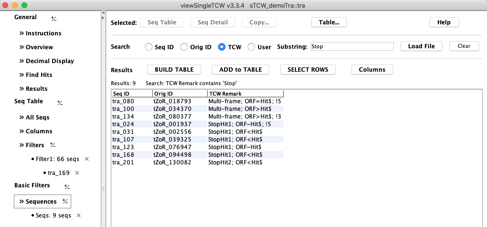
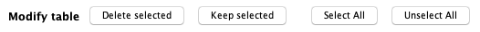

Sequence Query
The sequence can be queried by sequence ID or remark, where the User
remarks are added through the runSingleTCW interface, and the TCW remarks are added by TCW during ORF
computation; one such remark ("Multi-frame") indicates that the sequence has aligned hits in
multiple frames.

Sometimes it is easier if TCW assigns names to the sequences (option in runSingleTCW), in
which case, the original name (Orig ID) can still be viewed and queried on. Another runSingleTCW option
is to assemble the sequences, in which case the Orig ID will be replaced with the Longest read of the contig.
One or more sequence can be selected followed by View Sequences and they will be shown in the main Sequence table.
This Query interface could be merged with the sequence Filter interface, but it has the
added ability of being able to modify the table; the following options are at the bottom of the table:
